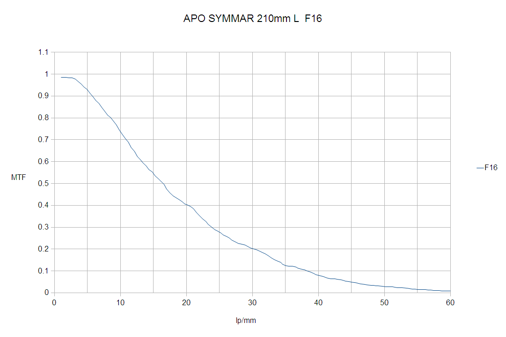
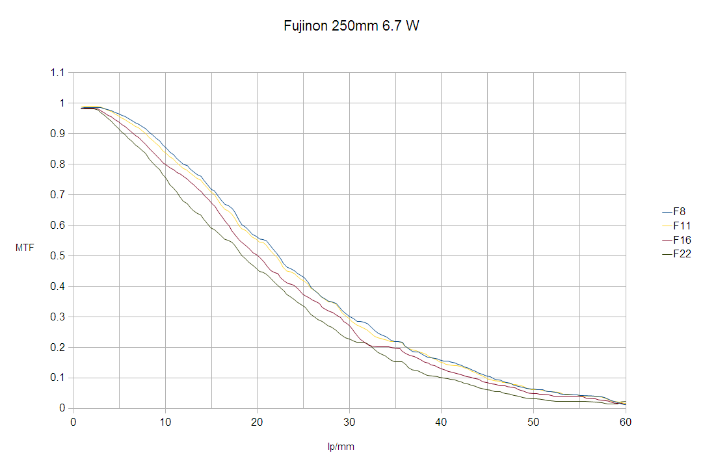
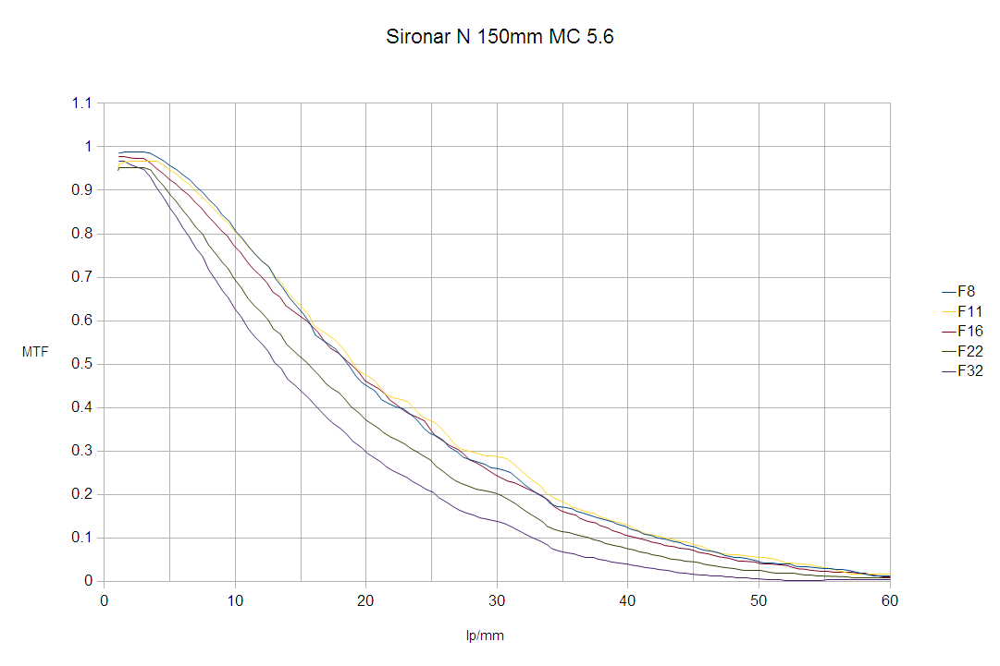

О большом формате
Целью данного исследования является вопрос о способности пленочных камер конкурировать с современными (октябрь 2015 года) цифровыми камерами.
Поскольку камеры 135 формата определенно не способны противостоять цифровым камерам, а возможности камер среднего формата вызывают большие сомнения, было решено исследовать возможности камер большого формата.
Методика исследования в значительной степени повторяет методику статьи [1].
"3070 мегапиксельная 8x10 камера" Canon 70D
В качестве камеры высокого разрешения использовалась камера Canon 70D имеющая КМОП сенсор с размером пикселя 4.1 мкм.
При заполнении пикселями такого размера сенсора размером 8х10 дюймов мог бы быть получен 3070 мп сенсор, для камеры с размером сенсора 4х5 - 768 мп сенсор.
В дальнейшем число без скобок означает разрешение 8х10 камеры, а число в скобках 4х5 камеры, если нет специальных указаний.
Итак, используемая виртуальная камера имеет 3070(768) мп сенсор.
Все снимки сделаны на ISO 100.
Разрешение измерялось по центру кадра и все выводы касаются только центральной части изображения.
| APO SYMMAR 210mm L F16 |
|  |
Как видно, на диафрагме F16, объектив способен разрешать 37 lp/mm, что соответствует 283(71) мп конечного изображения.
| Fujinon 250mm 6.7 F16 |
|  |
Объектив Fujinon 250 mm 6.7 W на диафрагмах F8 и F11 продемонстрировал несколько более высокое разрешение - 45 lp/mm, что соответствует 418(105) мп.
| Sironar N 150 mm MC 5.6 |
|  |
Объектив Sironar N 150 mm MC 5.6 на диафрагмах F8 и F11 продемонстрировал 42 lp/mm, что соответствует 364(91) мп.
Реконструкция MTF объектива
Следующим шагом была попытка реконструкции MTF собственно объектива и исключение влияния MTF сенсора на результат измерений.
К сожалению сенсор камеры Canon 70D имеет сильный анти-алиасинговый фильтр и получение кривых подобных:
| Sony A7r, CZ Planar 50/1.4 ZF |
 |
из [1] не представляется возможным.
Вместе с тем измерения, сделанные с объективами Otus 55mm, Canon 135mm L, Canon 100mm L, а так же измерения сенсора камеры Fuji S5Pro с объективом CZ Planar 50/1.4 ZF показали, что такой сенсор может быть достаточно хорошо описан той же функцией MTF(f) = |SINC(fd)|,
где f - пространственная частота, d - эффективный размер пикселя равный физическому размеру пикселя, умноженному на поправочный коэффициент k=3.
Ниже приводятся реконструированные MTF объектива соответствующие измерению с сенсором с бесконечномалым пикселем.
Так же приведены MTF пленки FUJICHROME Velvia 50 Professional из [2] и результирующая MTF объектива и пленки.
Как видно объектив разрешает 55 lp/mm, что соответствует 625(156) мп.
Совместное разрешение объектива и пленки составляет 45 lp/mm или 418(105) мп.
С другой стороны, данные по MTF пленки приведены производителем только до уровня 0.3. На этом уровне разрешение составляет 32 lp/mm, что соответствует 211(53)мп.
Выводы
В работе дана предельно оптимистическая оценка возможного разрешения камер большого формата.
Следует отметить, что наилучшие результаты получены на открытых диафрагмах, что означает как малую глубину резкости, нежелательную при таких видах съемки как пейзаж,
где, собственно, и требуется высокое разрешение, так и падение MTF ближе к краю кадра. С другой стороны, диафрагмирование будет снижать разрешение в центре кадра из-за дифракции,
что хорошо видно на приведенных графиках MTF. Так на диафрагме F32 разрешение Sironar N 150 mm MC 5.6 составит 32 lp/mm или 211(53) мп. Этот результат хорошо коррелирует с результатом [3], полученном на реальном 4х5 пленочном кадре на этой диафрагме.
Также следует принять во внимание тот факт, что в данной работе не отражен вклад MTF сканера или фотоувеличителя в детализацию конечного изображения.
Вместе с тем следует отметить наличие определенного потенциала у 8х10 камер, недоступного пока для цифровых камер.
Благодарности
Автор благодарит участника sergeynk конференции iXBT.com за предоставленные материалы